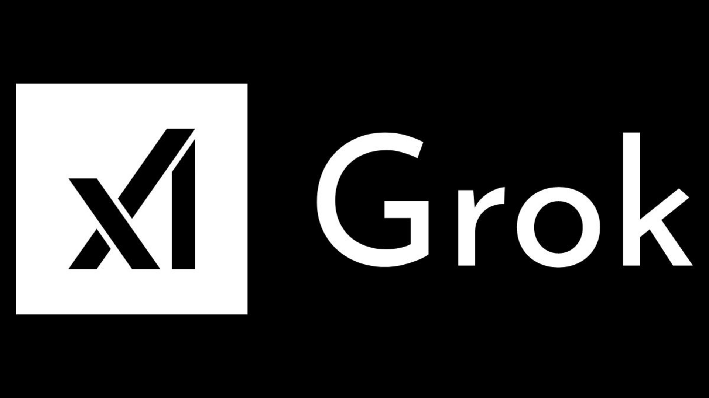

תעודת זהות
שנת הקמה: 2023
מדינת מקור: ארצות הברית
מייסדים: אילון מאסק וצוות חוקרי AI
מוצר מרכזי: Grok
Global AI Company
חברת בינה מלאכותית שהוקמה על ידי אילון מאסק ומתמקדת במודלי שפה, צ׳אטבוטים וחיבור לעולם המידע בזמן אמת.

שנת הקמה: 2023
מדינת מקור: ארצות הברית
מייסדים: אילון מאסק וצוות חוקרי AI
מוצר מרכזי: Grok
השם xAI משלב את האות X, שמזוהה עם כמה ממיזמי אילון מאסק, יחד עם AI — בינה מלאכותית.
השם קצר, טכנולוגי, ומרמז על קשר למערכת X ולחזון רחב של מערכות חכמות.
xAI נוסדה בשנת 2023 כחברה חדשה במרוץ מודלי השפה המתקדמים.
החברה קידמה את Grok כצ׳אטבוט ומודל שפה שמנסה להשתלב בסביבת מידע דינמית.
Grok נכנס לשוק כמענה תחרותי למודלי שפה מובילים אחרים, עם דגש על אינטגרציה עם פלטפורמת X.
2023: הקמת xAI.
2023: חשיפת Grok.
2024 ואילך: הרחבת יכולות Grok ושילובו במערכות נוספות.
xAI מייצגת את התחרות הגוברת בין חברות טכנולוגיה גדולות סביב מודלי שפה, עוזרים חכמים וגישה למידע בזמן אמת.
הלוגו מוצג לצורכי זיהוי חינוכי ומוזיאלי בלבד.